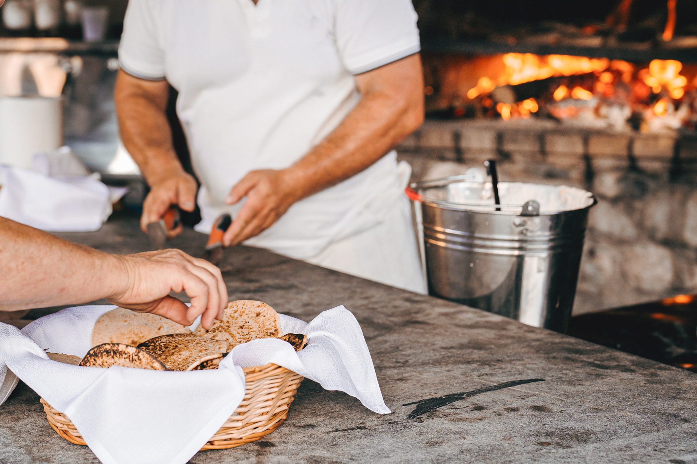
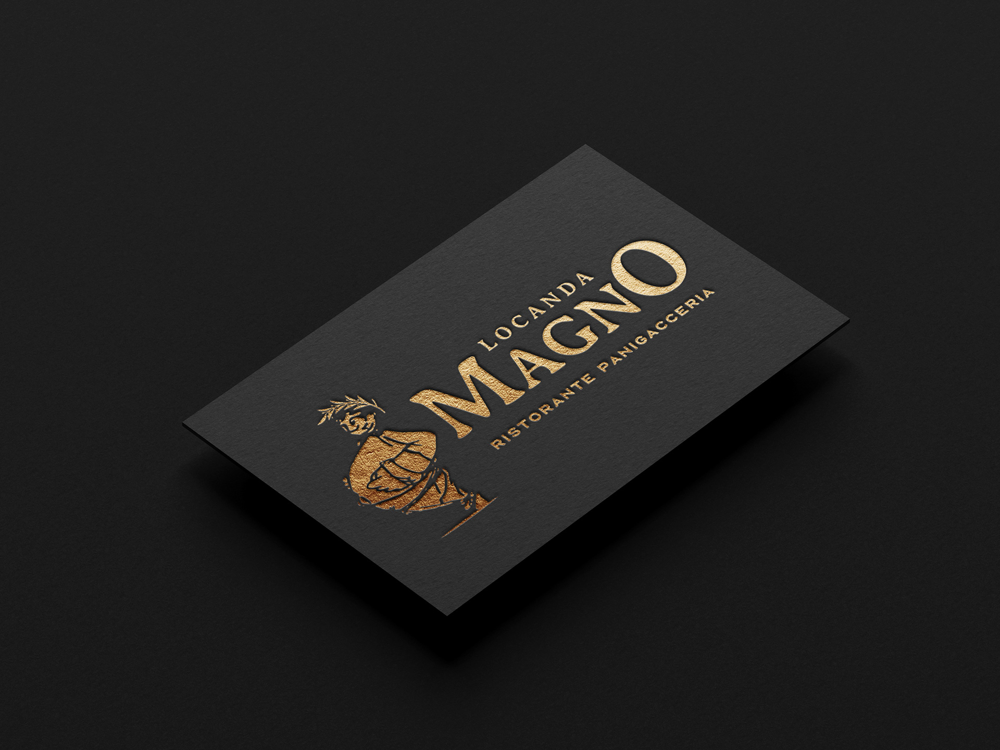
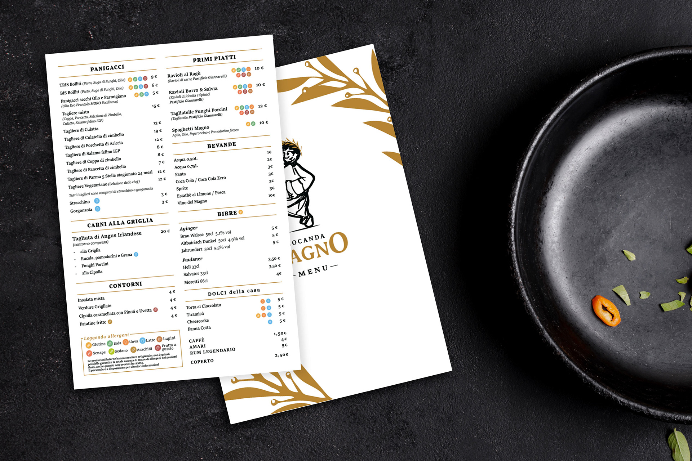
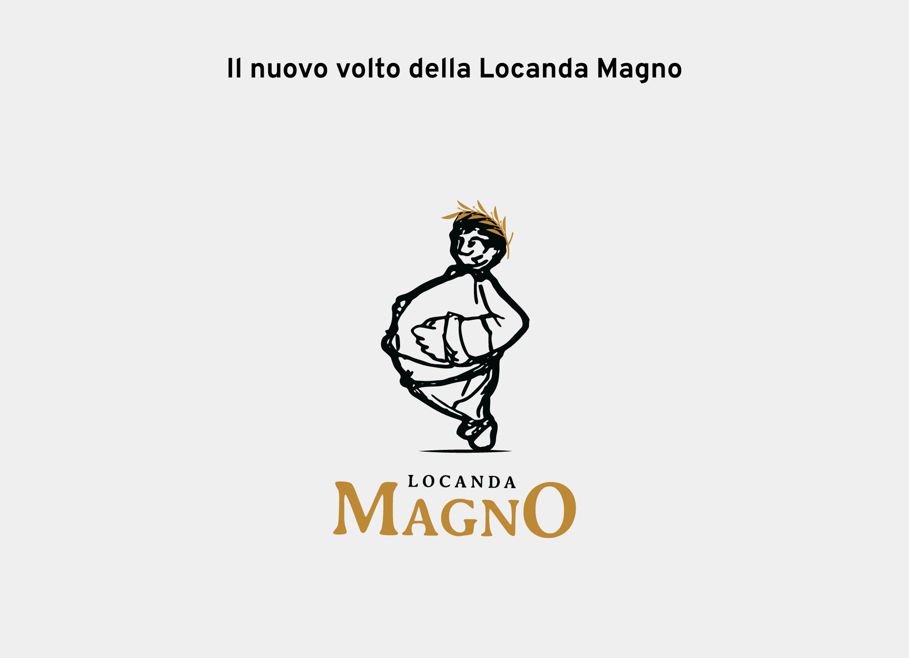
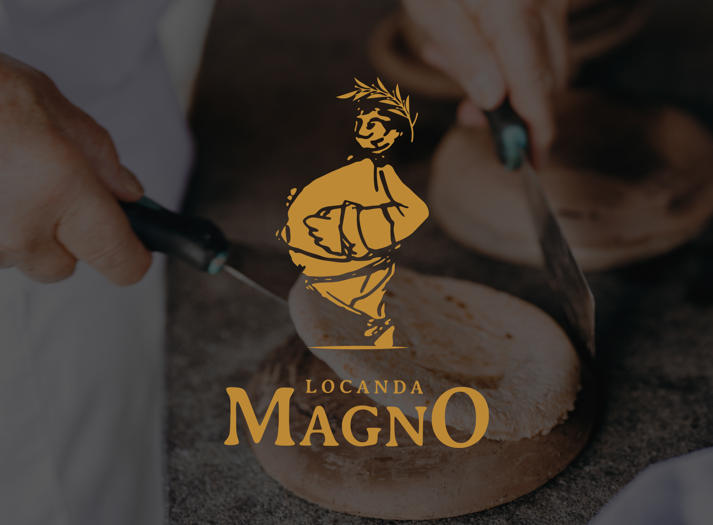
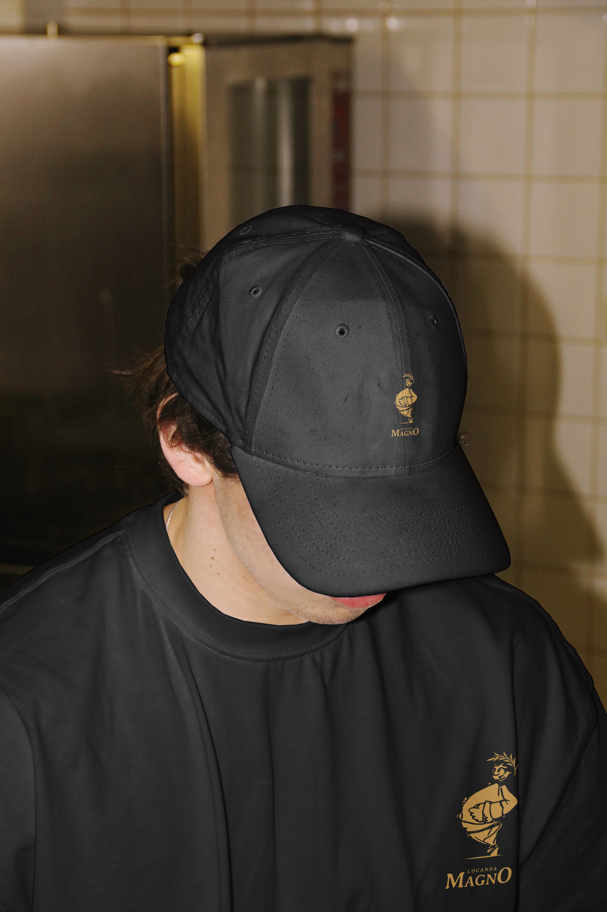
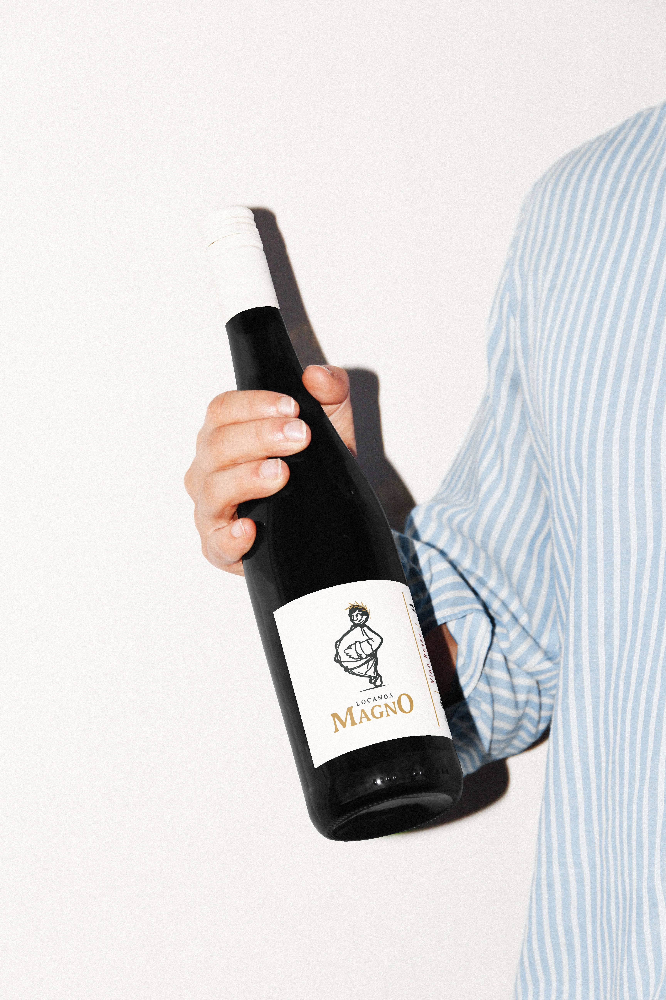

Locanda Magno
2024 | Restyling Logo Design
Da trattoria rustica
a locale premium
IL BRIEF
In occasione della riapertura, la Locanda Magno di Aulla, in Lunigiana, ha sentito il bisogno di evolvere la propria immagine. L'obiettivo era preciso: distanziarsi dal concetto di "trattoria rustica" per posizionarsi come un locale premium, sofisticato, di alto livello. Il logo originale raccontava bene la storia della Locanda, ma con la nuova veste non riusciva più a comunicare l'eleganza desiderata: un aspetto troppo informale, un tratto disegnato a mano fin troppo irregolare, mascotte e nome che si schiacciavano a vicenda rendendo il logo difficile da leggere nei formati piccoli. La sfida arrivava con due punti fermi da rispettare: conservare la mascotte storica, elemento iconico e riconoscibile del brand, e adottare una palette nero e oro capace di evocare lusso e modernità.



Un abito sartoriale
per un'icona
COME SI È SVOLTO IL LAVORO
Lavorare su un brand con vincoli così forti ha richiesto un equilibrio delicato: dovevo evitare il cliché del luxury generico e dare invece dignità a un'icona che esisteva già. Ho scelto di isolare la mascotte per trasformarla nel simbolo distintivo del brand, aggiungendo una corona d'alloro in oro che la eleva da semplice figura rustica a vero emblema del locale. Per il nome ho optato per un carattere serif dalle linee morbide e sinuose, che riprende la fluidità e il tratto umano della mascotte originale, evitando che il logo risultasse rigido o freddo. Il payoff, invece, gioca su un contrasto netto: un sans-serif strutturato e deciso bilancia la morbidezza del nome principale, dando al brand quel senso di ordine, precisione e contemporaneità tipico dei ristoranti di alto livello. Il risultato è un'identità che non rinnega il passato, ma lo veste con un abito sartoriale, pronta a intercettare un pubblico più esigente.



